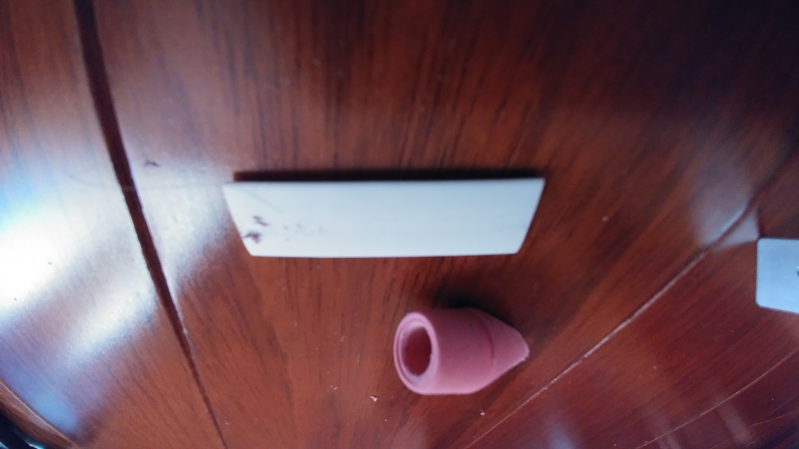

Review of the 1UP Keyboards DIY No-Solder USB Cable Kit
When I found out about the 1UP Keyboards cable kit, I was intrigued. It is supposed to let you create a cable of any color, length, or type that fits your keyboard perfectly. The one thing that deterred me from buying it, however, was the price tag - $14 for a 3 foot cable! Luckily, I was able to get a sample from 1UP Keyboards at no charge so I could write this review and tell you if it is worth it. Don't worry, this will not bias my review in any way, as you will see.
Here's the cable kit:

Inside are all of the parts - the USB plug parts, the cable, the paracord, the techflex (if you chose to get it), and the heatshrink. The parts seem high quality.

Now, time to assemble them! There is an online video on how to do this, and I am following it. The first thing you do is erase the writing off of the heatshrink. I am not sure why they don't just give you heatshrink that doesn't come with writing on it.

This produced a lot of eraser crumbs.
After that, I needed to pull the string out of the paracord so the cable can fit inside it.

The next step is to put the USB plug on the cable. This is the no-solder kit, so that is very easy. Just line up the wires inside the USB part and snap the green part down.

After that came the hardest part. I needed to push the cable through the paracord. It was very very tight, and took hours of time to get it just halfway through. The first few times I tried, the cable's exposed wires got stuck on the cable. I tried what 1UP recommended - putting tape on the cable end - but the tape just fell off. Eventually, I tried cutting off the end of the cable, but it got stuck in the middle and wouldn't budge. The time I worked on this step was around 6 hours (I did get help from others, this figure includes their time). I never was able to get the paracord on the cable. Luckily, I got techflex to put over the paracord, and I was able to use that instead of the paracord, but the cable is not blue like I intended it to be, it is grey.
After this, I continued with the video tutorial. Unfortunately, I don't have pictures of this process, but it went according to the video. I only ran into one problem with the heatshrink, but that was my fault. I kept the heat gun still for a moment, melting the techflex. I needed to use a new piece of heatshrink to cover up the hole.
Here's the completed cable:

So, what do I think of this cable kit? Here's the pros and cons, as well as my final rating.
Pros
- No soldering necessary
- You get a high quality cable in the end
Cons
- Very easy to melt the techflex when putting on the heatshrink
- Very very very hard, if not impossible, to install the paracord
Final Rating
I rate this cable kit 2 stars out of 5. It is very hard, if not impossible, to get the final product. However, the cable is still high quality. If you still want to buy one, click here.